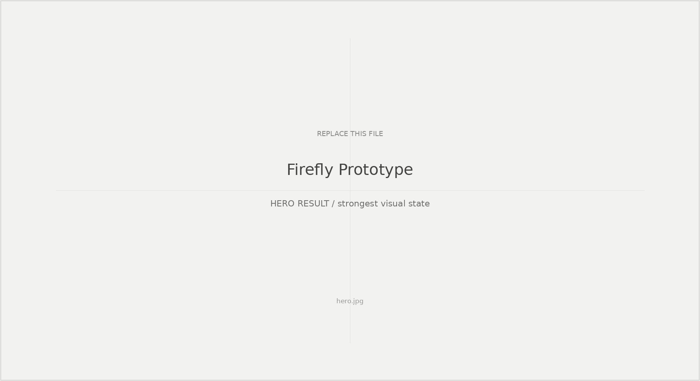
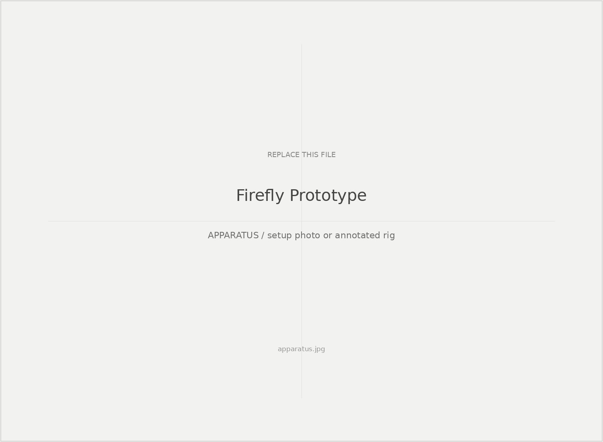
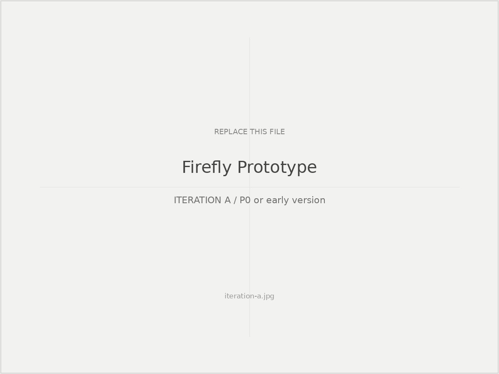
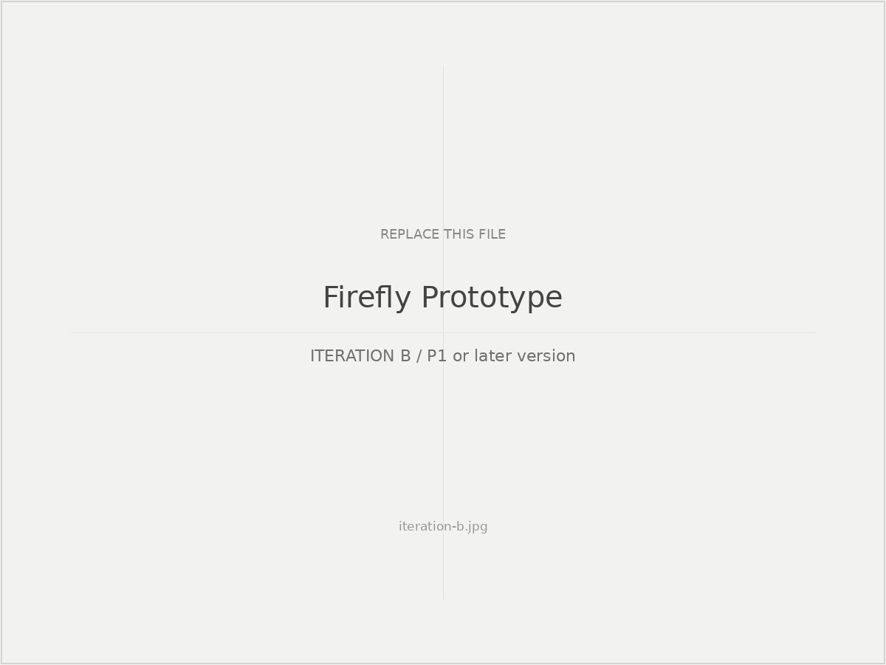
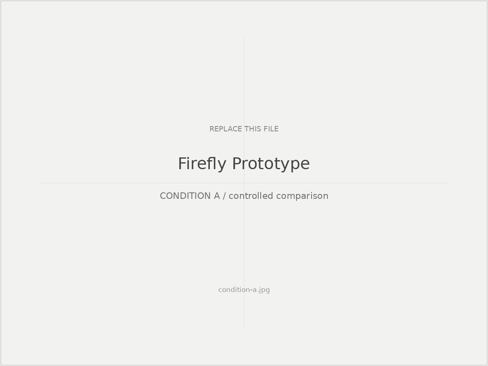
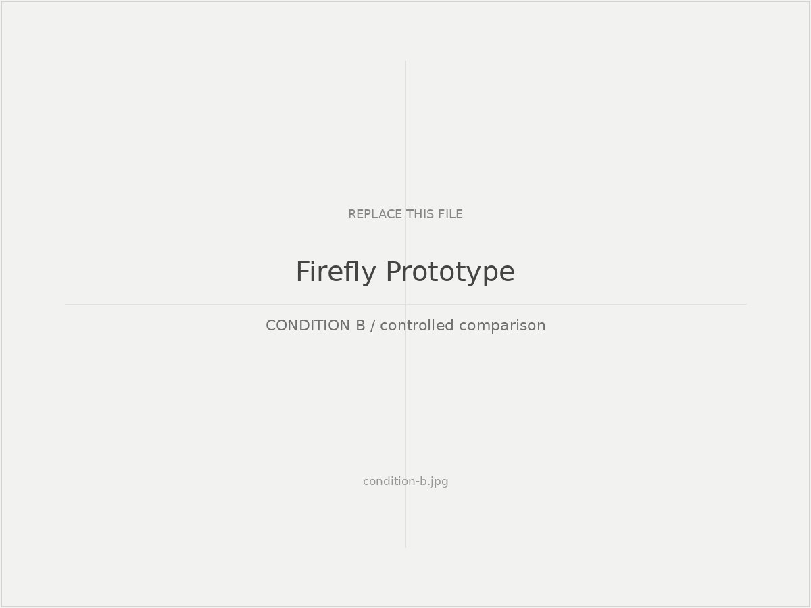
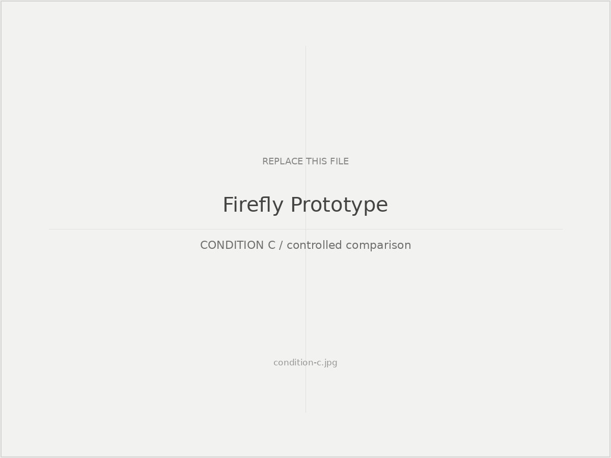
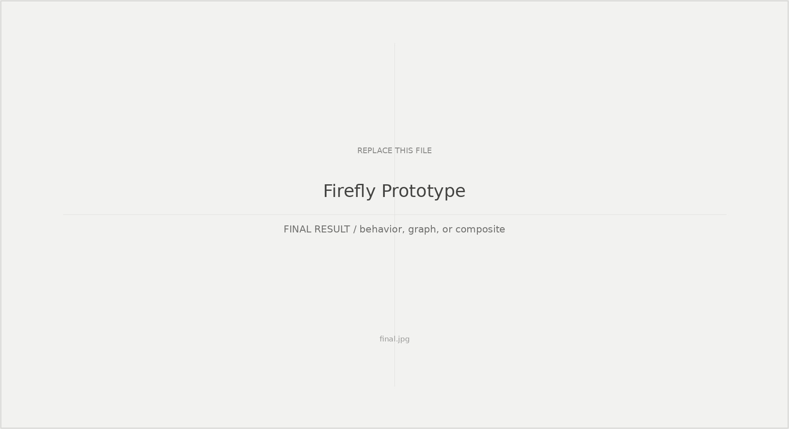

Study 04
Firefly Prototype
Question
When does simple distributed light behavior begin to feel coordinated, responsive, or agentic?

01 / Setup
Distributed-light apparatus

- Primary physical component
- Light / actuation source
- Camera / sensing position
- Control computer / microcontroller
- Viewer / participant position
02 / System
System diagram
Input
Movement / condition→
Process
Python / control logic→
Output
Light / material behavior03 / Iteration
Iterations
P0 / VERSION A

P1 / VERSION B

04 / Compare
Comparative results

Condition A
One-line observation.

Condition B
One-line observation.

Condition C
One-line observation.
05 / Reflect
Observation, limitation, next
Early trials suggest that small timing differences may shift the behavior from mechanical repetition toward a more ambiguous sense of coordination.

Optional final visual result, graph, composite, or documentation image.